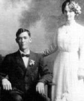

MAYNER MAY HASSELL
(Written by Annie L. Hassell)

I was born in Jefferson Co. Florida July 24, 1891. My parents accepted the gospel when I was a small boy. When I was 5 years old my mother died, leaving 4 small children, I was next to the youngest. We went to live with our uncle & aunt. Sometime later my father went on a mission. After he returned, a girl he had met in Georgia, came to our home and she and father were married. She was one of the greatest stepmothers, and seemed to love us as her own. Even when she had children she was as nice to us as ever.  When I was 9 yrs. old father moved us to Mexico. A tree blew onto his tent one day and killed him and another man staying also in the tent. By the time I was 16 my stepmother had married again. I left home and worked on a cow ranch in Ariz. Occasionally I returned home. When the saints left Mexico because of rebellion I met my family at El Paso and my sister Lula and I went to Salt Lake City. My stepmother with her husband went to Bluewater, N. Mex. After months of steady work in Salt Lake City I managed to buy train fare for my sister and myself to Bluewater. On the 17th of March the Relief Society gave a dance, that was where I met Annie. When the last dance was called I asked one of the boys to introduce us. The Sunday we started dating.
When I was 9 yrs. old father moved us to Mexico. A tree blew onto his tent one day and killed him and another man staying also in the tent. By the time I was 16 my stepmother had married again. I left home and worked on a cow ranch in Ariz. Occasionally I returned home. When the saints left Mexico because of rebellion I met my family at El Paso and my sister Lula and I went to Salt Lake City. My stepmother with her husband went to Bluewater, N. Mex. After months of steady work in Salt Lake City I managed to buy train fare for my sister and myself to Bluewater. On the 17th of March the Relief Society gave a dance, that was where I met Annie. When the last dance was called I asked one of the boys to introduce us. The Sunday we started dating.
I went to work in the mountains driving a logging outfit and earned enough money by fall to take us to the temple at Salt Lake. By 1917 I had built up a small herd of cattle. I sold them and we took our two small children and went overland in a Ford car to Kansas City where I went to an auto mechanic school for a few months. We never regretted it, as it has been a great help to me in making a living for my family. When we lived in the city I worked as a mechanic in the garages. I worked about 8 years on road construction driving and repairing heavy equipment. In my later life I worked in the sawmill and trucking business. During all these years we have raised a fine family of six children and are proud of everyone of them. In church activities I have served as assistant in M.I.A., teacher & counselor in the Sunday School, in the branch presidency, and branch clerk.